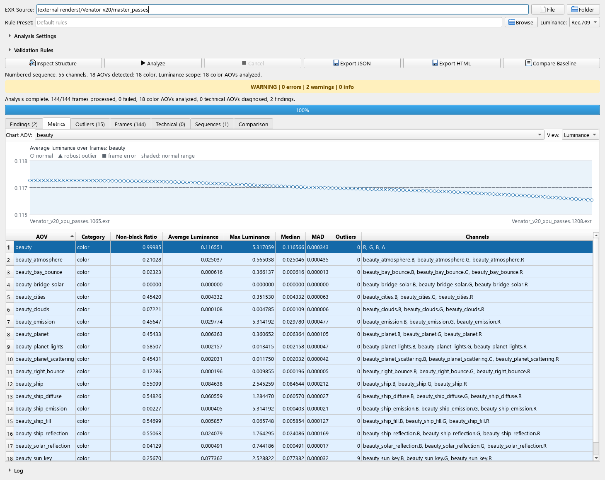

IDs separados del color
Los metadatos estándar identifican capas Cryptomatte. Sus IDs no contaminan la luminancia ni los outliers temporales.
Herramienta de Pipeline TD para VFX
AOVGuard inspecciona AOVs de color y canales técnicos, analiza secuencias de render y entrega evidencia clara antes de composición o publicación.
Problema de producción
La herramienta lee directamente la estructura EXR, conserva los canales desconocidos, distingue datos de color y técnicos, calcula métricas con precisión segura y aplica reglas configurables sin obligar al artista a elegir manualmente entre archivos simples y multilayer.
Localiza archivos con patrones, búsqueda recursiva, profundidad y límite de frames.
Describe resolución, canales, AOVs, partes y estructuras no compatibles.
Decodifica cada frame compatible una vez tras revisar cabeceras; conserva todos los canales físicos, incluidos alfa e IDs.
Detecta datos no finitos, AOVs vacíos, extremos, cambios y discontinuidades.
Devuelve la misma evidencia mediante GUI, CLI, JSON y HTML.
Correcciones actuales
Los metadatos estándar identifican capas Cryptomatte. Sus IDs no contaminan la luminancia ni los outliers temporales.
Un rango inclusivo permite detectar también frames ausentes al principio o al final de una entrega.
Las sumas y promedios por canal usan precisión de 64 bits para HDR y secuencias largas.
AOVs desconocidos y pases depth, mask o scalar multicanal retienen todos sus componentes para diagnóstico.
Cryptomatte sigue recibiendo diagnósticos objetivos por canal, como NaN e infinito; solamente se excluyen interpretaciones que no tienen sentido para IDs codificados, como luminancia o magnitud extrema.
Flujo para artistas y TDs

Arquitectura verificable
AnalysisReport es el contrato entre procesamiento y
presentación. Contiene inspecciones, métricas agregadas y por frame,
hallazgos, diagnóstico de secuencia y errores de lectura explícitos.
Las reglas se configuran mediante TOML o JSON. La sección
[aov_categories] permite clasificar nombres específicos
de un renderer o estudio sin perder canales desconocidos.
Alcance transparente
Inicio rápido
uv sync --locked --python 3.12 --extra dev
uv run aovguard inspect-structure "C:\ruta\render.exr"
uv run aovguard check-sequence "C:\ruta\renders" --expected-frame-range 1 800
uv run aovguard analyze "C:\ruta\renders" --expected-frame-range 1 800 --json reports\reporte.json --html reports\reporte.html
uv run --extra gui aovguard-uiConsulta la guía completa de instalación, uso, reglas, reportes y solución de problemas.
Candidata 1.4.0rc1: CLI y GUI aíslan el análisis por defecto y reutilizan un proceso hijo secuencial. Usa --frame-timeout-seconds 60 para limitar cada frame desde que el hijo está listo, o --in-process para desactivar el aislamiento sin timeout. --max-memory-mb 4096 activa la estimación de todas las partes y canales. Son controles de ejecución, no un sandbox ni un límite RSS duro. Los paquetes estables 1.3.0 se conservan separados.
Verificación local de la candidata desde código extraído: 1041 pruebas superadas, 3 omitidas y 96,34 % de cobertura en Windows/Python 3.12.12. Los renders de Maya y Venator se leyeron completos, con advertencias de contribución conservadas y coincidencia CLI/GUI. El verificador reproducible permite repetir estas comprobaciones sin distribuir EXR. Ver resultados y límites o consultar CI por revisión.